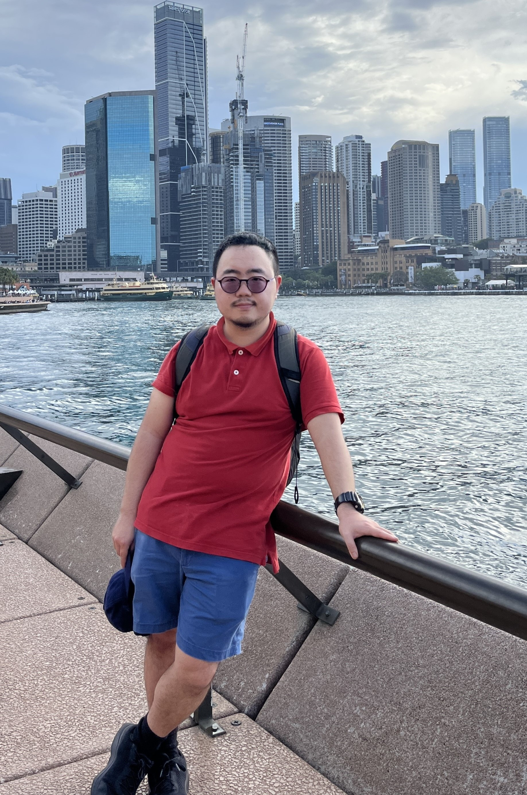

Yuzhou Joey Zou (邹雨舟)
(starting August 15, 2025)
Department of Mathematics and Statistics
Mathematics and Science Center
146 Library Drive
Rochester, MI 48309-4479
Email: yzou oakland edu (insert punctuation as needed)
I am an assistant professor in the Department of Mathematics and Statistics at Oakland University (starting August 15).
I am interested in microlocal analysis, inverse problems, PDE, and mathematical physics.
I obtained my Ph.D. in August 2021 from Stanford University under the supervision of András Vasy. I completed postdoctoral positions at UC Santa Cruz (2021-2022) working with François Monard and Northwestern University (2022-2025) working with Jared Wunsch.
Here is my CV.
Teaching
I will be an instructor for Calculus I (MTH 1554) in Fall 2025.
Previous teaching
Papers
-
Asymptotic Expansion of the Eigenvalues of a Bathtub Potential with Quadratic Ends.
Accepted for publication, 2024.
-
The hyperbolic X-ray transform: new range characterizations, mapping properties and functional relations, joint with
Nikolas Eptaminitakis and
François Monard.
Preprint, 2024.
-
Helmholtz quasi-resonances are unstable under most single-signed perturbations of the wave speed, joint with
Euan A. Spence and
Jared Wunsch.
Journal of Differential Equations, Vol. 440, Part 2. 2025. DOI:10.1016/j.jde.2025.113441.
-
The Morse index theorem for mechanical systems with reflections, joint with
Jared Wunsch and
Mengxuan Yang.
Nonlinearity, Vol. 37, no. 8. 2024. DOI: 10.1088/1361-6544/ad5636.
-
Boundary triples for a family of degenerate elliptic operators of Keldysh type, joint with François Monard.
Pure and Applied Analysis, Vol. 6, no. 2, 541-580. 2024. DOI: 10.2140/paa.2024.6.541.
-
The C∞-isomorphism property for a class of singularly-weighted X-ray transforms, joint with Rohit Kumar Mishra and François Monard.
Inverse Problems, Vol. 39, no. 2. 2023. DOI: 10.1088/1361-6420/aca8cb.
-
Microlocal Methods for The Elastic Travel Time Tomography Problem for Transversely Isotropic Media.
Submitted for publication, 2021.
-
Streak artifacts from non-convex metal objects in X-ray tomography, joint with Yiran Wang.
Pure and Applied Analysis, Vol. 3, no. 2, 295-318. 2021. DOI: 10.2140/paa.2021.3.295.
-
Partial Global Recovery in the Elastic Travel Time Tomography Problem for Transversely Isotropic Media.
Annales de l'Institut Fourier, Vol. 74, no. 5, 2077-2139. 2024. DOI:10.5802/aif.3617.
Upcoming conferences/workshops/travel
I will serve as a mentor in the 2025 Northwestern Dynamics RTG REU, June 23-August 1, 2025.
Recently attended conferences/workshops
-
"Great Lakes Mathematical Physics Meeting 2025",
University of Kentucky, Lexington, KY, June, 2025.
-
"TeachX 2025",
Northwestern University, Evanston, IL, May, 2025.
-
"2025 AMS Spring Central Sectional Meeting",
University of Kansas, Lawrence, KS, March, 2025.
-
"Harmonic and Microlocal Analysis in Partial Differential Equations",
MATRIX Institute, Creswick, Australia, December, 2024.
-
"2024 AMS Fall Western Sectional Meeting",
UC Riverside, Riverside, CA, October, 2024.
-
"Triangle Area Inverse Problems Weekend",
NC State University, Raleigh, NC, October, 2024.
-
"Summer School: Geometric Inverse Problems and Inverse Problems for Elliptic Equations",
UC Santa Cruz, Santa Cruz, CA, August, 2024.
- "NU Trends in Ergodic Theory", Northwestern University, Evanston, IL, July, 2024.
- "Microlocal Analysis and Quantum Dynamics" summer school and conference, Northwestern University, Evanston, IL, June, 2024. (co-organized)
-
"Great Lakes Mathematical Physics Meeting 2024",
Michigan State University, East Lansing, MI, June, 2024.
-
"SIAM Conference on Imaging Science (IS24)",
Atlanta, GA, May, 2024.
-
"From Microlocal to Global Analysis @ MIT", MIT, Boston, MA, May, 2024.
-
"Ohio River Analysis Meeting (ORAM 13)", University of Kentucky, Lexington, KY, March, 2024.
-
"Texas Analysis and Mathematical Physics Symposium", Texas A&M University, College Station, TX, February, 2024.
- "Spectral and Resonance Problems for Imaging, Seismology, and Materials Science", Reims, France, November, 2023.
- "Mentoring in the Mathematical Sciences", Rice University, Houston, TX, November, 2023.
- "Spectral Theory and Applications", Texas A&M University, College Station, TX, October, 2023.
- "Applied Inverse Problems Conference", Göttingen, Germany, September 2023.
- "Workshop on Mathematical Trends in Medical Imaging", University of Chicago, IL, August 2023.
- "Inverse Problems and Nonlinearity", Banff International Research Station, Canada, July 2023.
Links